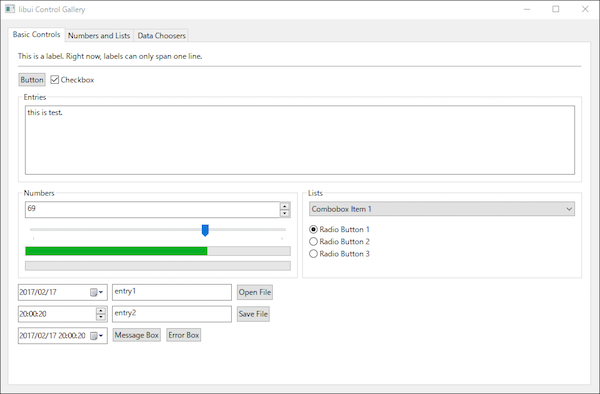

前から気になってちょこちょこ調べていた go での gui ライブラリを試す。 いろいろ漁った結果、libui が良さそうだったのでセットアップにだいぶ苦戦しながら最終的には動かせた。
とりあえずインストール
go get github.com/andlabs/ui
まずここでしばらくつまづいていた。
Win64bit環境で go get したら途中でエラーが出て完了できなかった。
いろいろ調べたら64bit環境のビルドツールチェインがインストールされてなかったのが原因のエラーだった。
github の issue を読んでいたら MinGW-w64 入れろって書いてあったので試しにいれてパス通したら動いた。
そもそも go get の仕組みをちゃんと理解していなかったのだけれども go get はダウンロードするだけではなくてその後にコンパイルも行う。
今回の libui は cgo で c コンパイルが走るのでどうやらそこでつまづいていた。
試す
とりあえず Github の tutorial だとだいぶ機能が少なかったので、 オリジナルライブラリのほうの c のソース examples を go で写経したのがこちら。
https://github.com/sharkattack51/go_libui_test

ライブラリ自体はまだ完全ではなさそうで、まだオリジナルから bind できていない機能もあったけど簡単なものだったら大丈夫そうだった。
そもそも go で gui アプリが作れた場合のメリットとしてはスクリプト感覚で作れるし、クロスプラットフォームであり、 ビルドしてしまえば実行環境に異存にしないバイナリが一個だけというのがあってとてもシンプルで素敵だ。
今回ついで解って良かったのは、
go build -ldflags "-H=windowsgui" main.go
Winビルドのオプションにこれつけるとアプリケーションがコンソール無しになる。